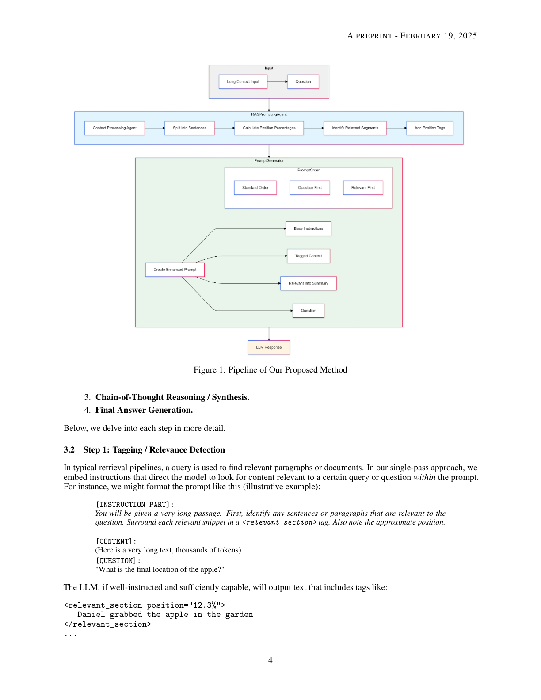
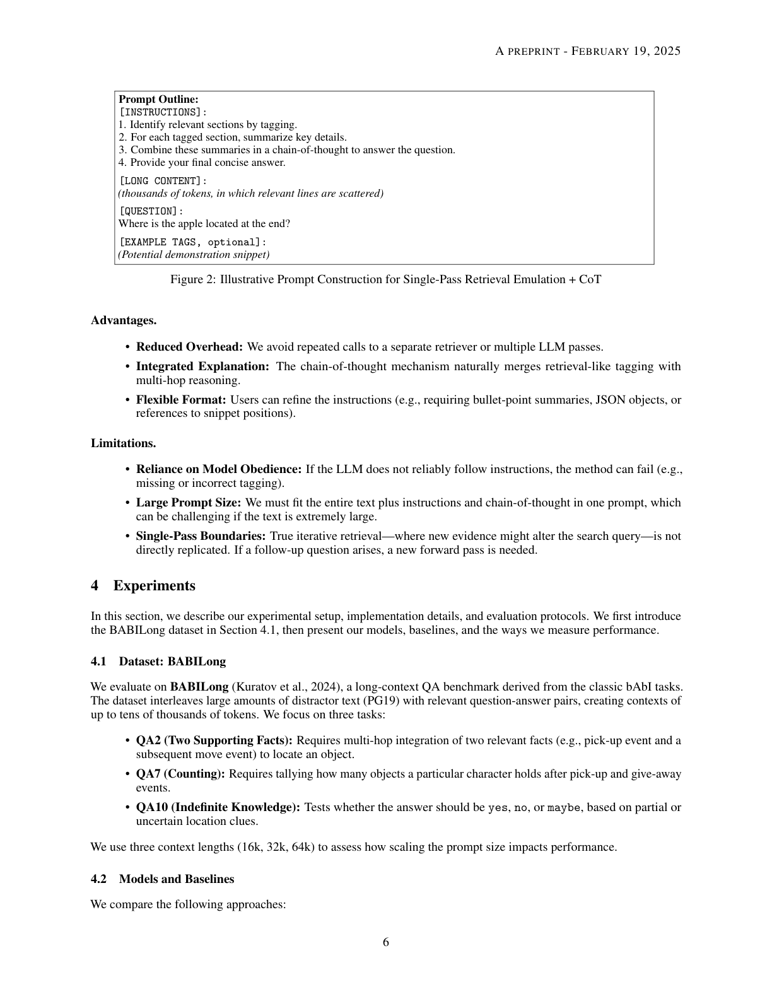

将模型同时作为检索器与推理器，在单次前向传播中以思维链整合散布于长文本中的证据
本文针对大语言模型（LLMs）在理解超长上下文时所面临的挑战，提出一种通过专门的提示工程与思维链（CoT）推理来模拟检索增强生成（RAG）的方法。尽管近期 LLM 在单次提示中已支持超过 100,000 个 token，但简单地扩大上下文窗口，并不能保证在关键信息散布于海量输入时仍进行稳健的多跳推理。我们的方法将模型同时视为检索器与推理器：它首先标记长文段中的相关片段，再利用逐步的思维链工作流整合这些证据。这种单次传递（single-pass）方法因而减少了对外部检索器的依赖，同时仍能聚焦于关键片段。我们在 BABILong（将标准 bAbI 问答问题与大量干扰文本交织）上评估了该方法。相比基线（无检索）与朴素 RAG 流程，我们的方法更准确地处理了物体位置追踪、计数与不确定知识等多事实问题。此外，我们分析了提示结构（问题、相关文本标记与整体指令的排列顺序）如何显著影响性能。这些发现强调，经过优化的提示工程结合引导式推理，能够增强 LLM 的长上下文理解能力，并可作为传统检索流程的一种轻量级替代方案。
大语言模型（LLMs）在理解与生成人类语言方面取得了显著进展，从最初只能处理数百 token 的架构，扩展到如今支持超过 100,000 个 token 上下文窗口的系统。这种上下文长度的扩展使 LLM 能在单次提示中处理大量文档——包括整部小说、法律合同或科学报告。尽管如此，当面对包含分散、多面信息的超长输入时，LLM 仍面临关键挑战（Kuratov 等，2024；Li 等，2024；Wang 等，2024）。尤其是，单纯增大上下文规模并不能保证模型能准确检索并组合相距遥远的信息片段；模型往往在需要多跳推理的任务上失败，尤其当相关细节散布于文本大段篇幅中时。
一条有前景的研究路线聚焦于检索增强生成（RAG）：通过外部检索机制从大规模语料或知识库中抓取相关段落来增强 LLM。这种方法有效缩小了输入范围，使模型聚焦于一组更短、上下文相关的文档。虽然 RAG 擅长在长上下文中定位事实性片段，但它往往难以胜任多跳或组合式推理——若必须拼合多个证据片段，朴素的「先检索再总结」工作流可能无法连贯整合信息。
与此同时，思维链（CoT）提示作为一种强大技术崭露头角，能引导 LLM 通过显式的中间推理步骤思考。通过在提示中展示思维过程，CoT 使模型更好地拆解问题、分离关键方面并推断正确答案。然而，当关键事实被遗漏或埋藏在大量无关内容中时，仅靠 CoT 可能导致幻觉式或不完整的推理。因此，我们需要一种协同方法，将 RAG 的覆盖面优势与 CoT 细粒度、逐步求解的能力结合起来。
在本研究中，我们提出一种新颖方法，通过提示工程与思维链推理来模拟 RAG，旨在增强 LLM 的长上下文理解能力，同时缓解标准检索的缺陷。我们的方法将模型同时视为检索器与推理器：先识别大上下文中的相关片段，再注入显式推理轨迹以模拟多跳检索，从而统一两方面的优势——(1) 聚焦散布全文的相关信息，(2) 通过逐步推理将证据组合为连贯答案。
我们在 BABILong 数据集上测试该方法，其在数千 token 上进行高级推理（含 NovelQA 等大型叙事基准）。实验表明，在某些多事实任务上我们的方法可优于标准 RAG 流程，并缓解较小参数模型的上下文限制；我们在计数、不确定知识问答与长文本输入中的多步物体追踪方面展示了改进。此外，我们将方法与原始长上下文模型对比，观察到专门的检索—推理循环能对远距离细节实现更鲁棒地整合。本文余下结构：第 2 节相关工作；第 3 节详述方法；第 4 节实验设置；第 5 节结果与分析；第 6 节结论与未来方向。
早期语言模型（BERT、GPT-2）受限于数百到两千 token 的输入长度；更近的模型（GPT-3 扩展到 2048，GPT-3.5 Turbo、Claude 2、Gemini 1.5）声称支持超过 100,000 token 的上下文。然而实证研究揭示，这些长上下文能力并不必然转化为对整个输入的有效利用——即便窗口达百万 token，模型往往只关注所提供文本的一小部分，导致关键信息分散时推理性能下降。多种基准（BABILong、NeedleBench、NovelQA、CLongEval 等）涌现以评估 LLM 利用扩展上下文的能力。总体结论是：仅扩展上下文规模并不能保证鲁棒理解与多事实整合；关键问题包括注意力机制中的上下文混淆与上下文稀释，使模型难以优先并回忆关键事实。因此，有效长上下文理解的研究已转向基于检索的方案、分块、分层建模或精炼的提示工程。
RAG 将语言模型与外部检索器配对，从索引语料中获取相关片段。它将注意力有效缩小到相关内容，但通常将检索视为一次性步骤。需要多个不相交事实的多跳推理任务，若初始 top-k 检索未捕获所有必要片段，便会失败。多种迭代或工具增强的检索方法已出现以弥补这些局限，但多轮流程增加了复杂度与计算开销。我们的方法旨在在模型的单次传递中保留多跳检索，从而提供相对于全规模外部 RAG 的轻量级替代。
CoT 提示表明，LLM 通过产生中间推理步骤可显著改进复杂任务。但当关键事实缺失或埋于大上下文时，CoT 本身可能导致不完整或幻觉的推理链。因此重要研究方向是将 CoT 与外部检索调用结合；然而这类方法可能需要多次模型传递或独立检索器。本文在单次前向传播中融入 CoT 推理，同时通过提示工程模拟检索——不让模型调用外部索引，而是指示其在提示自身中识别相关文本片段，再将这些片段链式组合为多跳解。
模拟 RAG 的核心思想是在单个提示中统一「基于检索的聚焦」与「基于 CoT 的多步推理」的益处。我们不直接编排独立的检索调用，而是指导模型定位并标记输入文本的相关部分，再以 CoT 风格遍历这些标记片段。该方法依赖于精心构造的提示，引导语言模型：(1) 识别相关片段；(2) 显式标记（如用 <relevant_section>）；(3) 以思维链方式总结或分析这些片段；(4) 引用标记证据产生最终答案。通过在单次传递中封装类检索的选择与多跳推理，我们在保留对潜在大输入上下文鲁棒覆盖的同时，减少了对外部检索器的依赖。
本节详述我们基于提示的检索模拟与思维链推理方法。图 1 给出了流程示意。

我们的方法旨在在单次 LLM 调用中复现 RAG 的关键步骤（检索与后续生成）。传统 RAG 依赖独立检索系统、短列表获取段落、以及基于这些段落的最终生成；相比之下，我们的方法用提示工程模拟检索：指导模型 (a) 标记文本中的相关段落，(b) 显式引用它们，(c) 通过思维链推理组合它们。这种统一寻求最小化开销，因为我们避免了反复调用外部搜索引擎。方法在单次前向传播中依次进行：1) 标记/相关性检测；2) 局部摘要/抽取；3) 思维链推理/综合；4) 最终答案生成。
在典型检索流程中，查询用于查找相关段落；在我们的单传递方法中，我们嵌入指令，引导模型在提示中寻找与某查询或问题相关的内容。例如，我们可格式化提示：先给指令「你将得到很长的段落，首先识别任何与问题相关的句子或段落，用 <relevant_section> 标签包裹每个相关片段并注明大致位置」，再给长文本与问题。若模型指令遵循能力足够，将输出含标签的内容（如 <relevant_section position="12.3%">Daniel grabbed the apple in the garden</relevant_section>），从而有效模拟检索。我们可调整粒度（句级或段级标记），或指定 JSON 格式（含 content、position、reason_why_tagged）以鼓励模型自我合理化其标记。其有效性取决于模型的指令遵循与长上下文理解能力；在 BABILong 上，精心设计的提示可使现代 LLM 在数万 token 中可靠识别相关片段。
标记后，我们可提示模型（在同一输出中）为每个 <relevant_section> 生成局部摘要或抽取。指令如「为你标记的每段相关部分，总结其中的实体、动作或数值细节，存为简短要点列表」。这一步有助于防止重要上下文丢失；在多跳查询中，多个相关片段散布于文本不同部分，摘要为每段提供凝练版本，供下一步整合。
接着，模型（仍在同一单次输出序列中）被提示组合这些局部摘要并产生思维链解释。由于拥有每个相关片段的摘要，模型可进行多跳推理。以位置追踪问题为例：步骤 1：Daniel 最初在花园拿起苹果（位置 12.3%）；步骤 2：Daniel 移到厨房（位置 58.9%）；步骤 3：因此苹果现位于厨房。
枚举思维链步骤后，模型输出简洁结果，如「Answer: The apple is in the kitchen.」。对于要求 yes/no/maybe 或数值回复的任务，最终陈述可遵循所需格式；通过附加明确指令（如「现在用一句话给出最终答案」），我们帮助模型产生简洁、结构良好的结论。
我们将四个概念步骤实现在单次前向传播中——不多次调用 LLM，而是精心组织提示，要求模型在一次补全中依次产生标记片段、局部摘要、思维链与最终答案。图 2 勾勒了最终提示的可能结构（指令→长内容→问题→示例标签）。

优势：减少开销（避免反复调用检索器或多轮 LLM 传递）；集成解释（CoT 自然合并类检索标记与多跳推理）；格式灵活（用户可要求要点、JSON 或引用片段位置）。局限：依赖模型服从指令（若不可靠则可能失败）；大提示尺寸（须将整段文本加指令与 CoT 装入同一提示）；单传递边界（无法真正复现「新证据改变查询」的迭代检索，出现后续问题需新传递）。
我们在 BABILong（源自经典 bAbI 任务的长上下文 QA 基准）上评估，其将大量干扰文本（PG19）与相关问答对交织，构建达数万 token 的上下文。我们聚焦三个任务：QA2（两支撑事实，需多跳整合两个相关事实以定位物体）、QA7（计数，需统计某角色经拾取与赠予事件后持有多少物体）、QA10（不确定知识，测试基于部分/不确定位置线索回答 yes/no/maybe）。我们使用三种上下文长度（16k、32k、64k）评估提示规模扩展的影响。
对比三种方法：(1) 基线（无检索）：直接给整段文本+问题，无标记或 CoT 指令；(2) 单步 RAG：用检索器取 top-k 句子附到短提示；(3) 提出方法（模拟 RAG + CoT）。在两个扩展上下文 LLM 上测试：gpt-4o-mini（支持 128k）与 llama-3.1-8b-instruct（32k+ 窗口）。
每种方法在每个任务的每种上下文长度上运行 25 个样本，使用一致的生成参数（max_tokens=20，temperature=0.0），通过模型输出是否匹配 gold 标签计算准确率。我们自动化流程（数据存储、按方法构建提示、记录答案与正确性、输出 CSV 与总体准确率），并生成热力图；代码依赖 datasets、openai、tqdm、pandas 等库。
我们在三个 BABILong 任务（QA2、QA7、QA10）与三种上下文长度（16k、32k、64k）上呈现发现，对比基线、RAG 与提出方法；Proposed 行反映三种提示顺序（标准顺序、问题优先、相关优先）的准确率区间。下面逐任务详述。
QA2 测试模型能否整合两个分离事实以确定物品最终位置（如 Charlie 去厨房拿到瓶子后移到阳台，问瓶子在哪）。观察：单步 RAG 得分极低（0.00–0.08），因其常无法同时检索两个相关句子；基线在较短上下文表现中等但随上下文增长而退化；提出方法在所有长度上优于 RAG，gpt-4o-mini 在 64k 时「问题优先」顺序效果尤其强（达 0.44 高端）。提示顺序效应：日志显示「问题优先」帮助模型更早聚焦相关行，尤其在 64k 时使拾取与移动事件的标记更一致。
QA7 需基于一系列拾取/赠予动作追踪某人任意时刻持有多少物体。观察：提出方法持续领先，受益于逐步 CoT 突出每个拾取或赠予事件；单步 RAG 若未在 top-k 中检索到某些事件则通常遗漏；提示顺序对 QA7 不如 QA2 重要，但「相关优先」与「问题优先」在 gpt-4o-mini 16k 上均产生更高准确率。错误案例中，物体多次易手时基线或朴素 RAG 可能错误假定首次或末次提及为定论，而我们的内联标记与推理步骤更清楚地揭示每次过渡动作。
QA10 测试模型处理不确定或部分信息、常需回答 yes/no/maybe 的能力。观察：若单个片段能澄清不确定性，RAG 在此可相对强（llama-3.1-8b 在 16k 达 0.72）；提出方法在某些长度仍取得有竞争力或更优的结果（尤其 llama 在 16k 的「问题优先」达 0.76）。提示顺序再次呈现差异，有时标准或「相关优先」优于「问题优先」，表明不确定知识查询对提示安排敏感。
我们提出了一种新颖方法，在 LLM 的单次前向传播中，通过专门的提示工程与思维链推理模拟检索增强生成（RAG）。通过标记相关片段并引导模型对其执行多跳推理，我们解决了朴素一次性检索或纯大上下文方法的关键局限。BABILong 上的实证评估表明，我们的基于提示的方案在某些多事实场景（尤其上下文长度增长时）可同时优于基线与标准检索流程。然而，某些任务（如不确定知识）显示，若所有相关信息可定位于单个片段，单步 RAG 仍具竞争力；我们的结果也凸显了提示顺序的重要性——重排问题、指令与上下文可产生不同结果，尤其在模型可能失去焦点的长上下文中。
局限：尽管单传递设计降低了复杂度，但当确需获取外部知识或需对检索事实迭代精炼时，它可能不足；且方法成功依赖模型忠实遵循标记指令的能力，对指令微调较弱或任务更模糊的模型该假设可能失效；极大量输入（如百万 token）即便模型声称可处理也构成挑战，因全部内容与指令须装入同一提示窗口。
未来方向：用于超长输入的自适应/分层分块（结合部分摘要与内联标记）；迭代自纠正（生成中出现矛盾或缺失事实时修订 CoT）；混合工具集成（初始单传递标记尝试失败后可选择性调用外部知识库）；扩展基准（InfinityBench、NeedleBench、LongHealth 等领域特定任务）。总体而言，我们相信基于提示的检索模拟为改进 LLM 长上下文推理提供了一条轻量而有效的路径。
参考文献（References）原文见论文第 10–11 页，本译文从略。